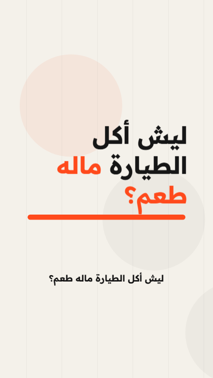
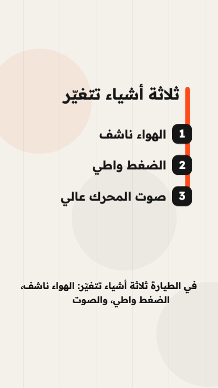
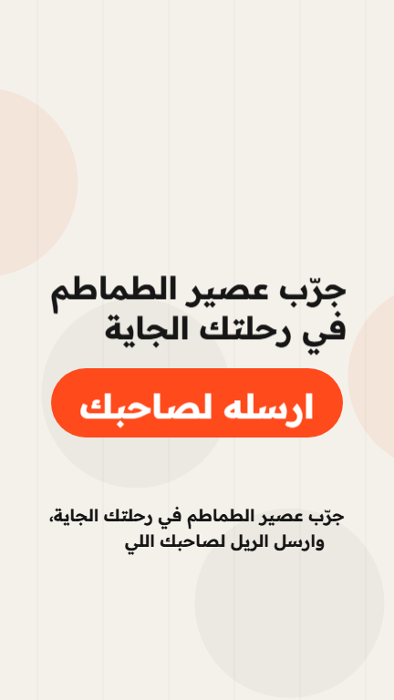
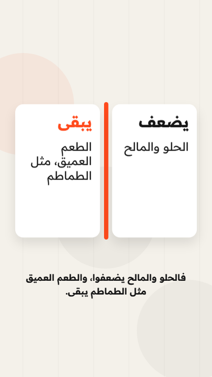

دليل نسخة GAOBA AI Reel Maker Lite المجانية: من مجلد فاضي إلى فيديو MP4 جاهز للنشر، بدون برنامج مونتاج وبدون خبرة برمجة.



لقطات من ريل المثال الموجود في المستودع، صُدّر بهذه النسخة نفسها.
صفحة 2: ايش تحتاج · صفحة 3: تجهيز الجهاز · صفحة 4 و5: الخطوات الست · صفحة 6: أضف صوتك · صفحة 7: الفرق عن النظام الاحترافي والمشاكل الشائعة
بصراحة: السطر الواحد يكفي بعد تجهيز يتم مرة واحدة. التجهيز يأخذ من 15 إلى 30 دقيقة أول مرة، وبعدها كل ريل جديد يبدأ من سطر.
| المطلوب | ملاحظة | التكلفة |
|---|---|---|
| كمبيوتر Windows أو Mac | اختُبرت هذه النسخة على Windows 11 فقط. الجوال لا يكفي. | — |
| تطبيق Claude للكمبيوتر | Claude Code غير متاح في الخطة المجانية: يحتاج خطة Pro أو أعلى (حسب صفحة الأسعار الرسمية وقت كتابة الدليل). | اشتراك شهري |
| Node.js نسخة LTS | برنامج يشغّل أدوات الحركة والفيديو. تنزّله أنت مرة واحدة (صفحة 3). | مجاني |
| إنترنت | لتثبيت الحزم، ولتنزيل متصفح صغير للرسم (حوالي 130 MB، مرة واحدة)، ولتحميل الخط عند كل تصدير. | — |
| مساحة 2 GB | للحزم والفيديوهات. | — |
تثبيت الحزم: أقل من دقيقة · أول رسم للصور (ينزّل المتصفح): حوالي دقيقتين · تصدير الريل: أقل من دقيقة · ريل كامل من سطر واحد، أول مرة: حوالي 4 دقائق. جهازك وسرعة الإنترنت عندك قد يغيّران هذه الأرقام.
ثلاثة أشياء تنزّلها بنفسك. Claude لا يقدر ينزّلها بدلًا عنك.
لو كان التطبيق مفتوحًا قبل تثبيت Node.js، أغلقه وافتحه من جديد.
الرسومات في هذا الدليل توضيحية ومبسّطة: شكل المواقع والتطبيق عندك قد يختلف قليلًا.
شغّل التطبيق الذي ثبّته، واضغط تبويب Code في أعلى النافذة.
لماذا التطبيق؟ لأنه يشتغل على ملفات جهازك، والمتصفح لا يقدر.
المجلد الذي فككت ضغطه في صفحة 3: غيّر اسمه إلى AI Video Editor وانقله إلى مكان تعرفه، مثل سطح المكتب.
فيه التعليمات التي تعلّم Claude يسوّي الريل، وفيه يُحفظ كل ريل تخلّصه.
تأكد أنك ترى داخله مباشرة ملفات مثل README.md وpackage.json، مش مجلدًا آخر بنفس الاسم.
في تبويب Code ابدأ محادثة جديدة. في الصف الذي تحت خانة الكتابة:
فكذا Claude يقدر يقرأ ملفات المجلد ويكتب فيها. لو سألك التطبيق هل تثق بالمجلد، وافق.
اكتب الجملة في خانة المحادثة. يفحص، ويثبّت الحزم الناقصة بنفسه، ويقول لك النتيجة.
لو طلب منك التطبيق الإذن بتشغيل أمر، وافق. لو قال إن Node.js ناقص، ارجع لصفحة 3.
يكتب النص، يبني المشاهد، يراجع صورها، ثم يصدّر الفيديو.
وين ألقى الفيديو؟ داخل مجلدك: AI Video Editor › out
أول مرة فيها دقيقة أو دقيقتان هادئتان (ينزّل متصفح الرسم). هذا طبيعي.

قل له بكلامك العادي، مثل ما تقول لمونتير: يعدّل ويصدّر من جديد في المجلد نفسه.
أمثلة: «احذف المشهد الثالث»، «خلّي الخلفية غامقة»، «قصّر النص»، «اكتب اسم حسابي فوق».
راجع النص قبل النشر. Claude يكتب النص من معلوماته ولا يتحقق منها بدلًا عنك. لو فيه معلومة غلط، قل له يصحّحها.
بدون صوت، الريل يخرج بكلام مكتوب يظهر كلمة كلمة، وهذا يكفي للنشر. لو تشتي تعليقًا صوتيًا، هذي الطريقة المختبرة: صوتك أنت، من جوالك، بدون أي حساب.
يعطيك الأسطر بالترتيب. هي محفوظة أيضًا في ملف script.txt داخل مجلد الريل.
ارسل التسجيل لكمبيوترك (بالإيميل أو واتساب ويب أو كيبل)، وحطّه داخل مجلد AI Video Editor. الصيغ المقبولة: mp3 وm4a وwav.
عن التزامن: طول الريل يتبع تسجيلك، وكل مشهد يأخذ حصته من التسجيل حسب طول سطره. هذا تقدير، لا استماع للتسجيل: في اختبارنا بتعليق حقيقي تبدّل كل مشهد خلال 0.2 ثانية من بداية سطره. لو مشهد يسبق أو يتأخر، قل له أي مشهد.
في المستودع أداة لصوت ElevenLabs بحسابك ورصيدك أنت (انسخ .env.example إلى .env وضع مفتاحك). هذه الأداة لم نختبرها بعد، فاعتبرها تجريبية. مفتاحك يبقى في ملف .env على جهازك فقط: لا تكتبه في المحادثة ولا ترسله لأحد.
الريل الذي أوصلك لهذا الدليل صُنع بالنظام الاحترافي لـ GAOBA AI. نسخة Lite تمشي على الخطوات الست نفسها، لكنها أبسط:
| ما يقوله الريل | في نسخة Lite | في النظام الاحترافي فقط |
|---|---|---|
| الخطوات 1–4 والخطوة 6 | كما هي | — |
| «بيكتب النص» | نعم، 5–8 مشاهد | بحث ومصادر واختبار فهم |
| «ويسجّل الصوت» | جزئيًا: صوتك أنت (مختبر)، أو ElevenLabs بحسابك (غير مختبر) | صوت مستنسخ ومحاذاة لكل كلمة |
| «ويحرّك كل مشهد» | نعم، بستة قوالب جاهزة | مشاهد تُبنى لكل ريل، ثلاثية الأبعاد، وكاميرا |
| «ويضبط الكلام اللي على الشاشة مع كل كلمة» | بالتقدير، لا بالاستماع للصوت | توقيت حقيقي من التسجيل |
| «ويفحص الحركة قبل ما تشوفها» | يفحص صورة من كل مشهد | فحص للحركة والصوت وفيديو المعاينة |
| موسيقى ومؤثرات صوتية | لا | نعم |
| المشكلة | الحل |
|---|---|
| «npm غير معروف» | Node.js غير مثبّت أو التطبيق لم يُعد تشغيله. ثبّته (صفحة 3)، أغلق تطبيق Claude وافتحه، ثم أعد الفحص. |
| هادئ لدقيقة أو دقيقتين أول مرة | ينزّل متصفح الرسم (حوالي 130 MB). انتظر. |
| الخط غريب أو الحروف مقطّعة | لا يوجد إنترنت وقت التصدير، فلم يُحمَّل الخط. |
| Claude لا يعرف ايش تقصد | تأكد أنك اخترت Local والمجلد الصحيح (صفحة 4)، وابدأ محادثة جديدة. |
| نص مقصوص أو صغير في مشهد | قل له: «النص في المشهد كذا طويل، قصّره». |
كود المستودع برخصة MIT. يعتمد على Remotion وله رخصته الخاصة: مجاني للأفراد والفرق الصغيرة، ومدفوع للشركات الأكبر. اقرأ remotion.dev/license قبل الاستخدام التجاري. الخط Readex Pro برخصة SIL OFL.